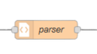
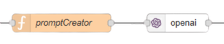
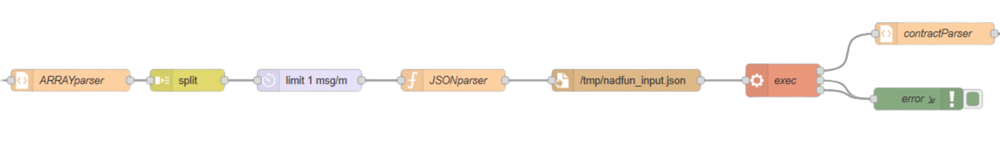
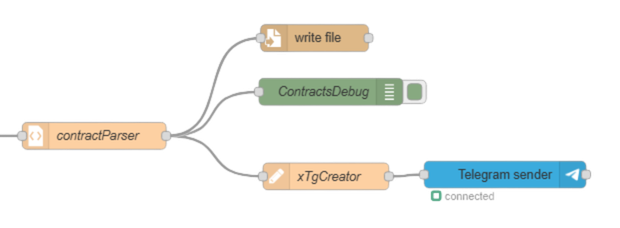
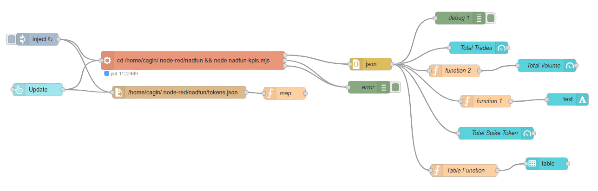

Technology
Infrastructure
Source
AI Model
gpt-4
How to Work (Token Create)
Step 1. Collect Data Weekly
The flow is triggered either manually or automatically on a weekly basis.
At each trigger, it calculates the start and end dates of the current week and dynamically generates the corresponding report URL.
This URL is then passed to the HTTP Request node, which sends an HTTP GET request to the target webpage.
The HTML source of the report page is retrieved and forwarded to the next step for validation and further processing.
Step 2. Parse
In this step, the HTML content retrieved from the previous stage is processed to extract structured project data.
The parser isolates the main article section and iterates through each project entry using pattern matching.
For every project, it extracts key details such as the project name, website URL, funding amount, funding round, image URL, and description.
All extracted information is normalized, cleaned from HTML artifacts, and stored as a JSON array for downstream processing.

Step 3. Decide
In this step, the parsed project list (JSON array) is sent to an OpenAI model to make a structured selection.
The promptCreator node builds a chat/completions request that instructs the model to choose exactly 5 different projects from the dataset.
For each selected project, the model returns a standardized JavaScript object containing the project name, a 3–6 letter uppercase symbol, a short meme-style description, image link, initial buy amount, and website.
The output is forced to be a raw, valid JavaScript array only (no markdown, no comments), so it can be consumed directly by the next automation steps.

Step 4. Create Tokens
In this step, the selected projects are converted into on-chain tokens using the NadFun SDK.
The JSON array produced in the previous step is split into individual project objects and processed one by one to ensure controlled execution.
Each project definition is written to a temporary JSON file and passed to a Node.js script executed via the exec node.
The script initializes the NadFun SDK, loads the project image (from a URL or local file), calculates fees and expected token amounts, and deploys a new token with an initial buy transaction.
Deployment results, including token addresses, fees, and expected token output, are returned as structured JSON for logging and post-processing.

Step 5. Post-Processing & Reporting
After each token is successfully created, the deployment results are processed and finalized.
Token details such as contract address, symbol, fees, and expected token amounts are parsed and stored in a structured JSON file for record-keeping and auditing purposes.
In parallel, a formatted summary of the newly created token is generated and sent to a Telegram channel via a Telegram bot.
This step ensures both persistent storage of deployment data and real-time visibility of token creation events.

How to Work (Dashboard)
The dashboard flow is triggered either automatically every 5 minutes or manually via the Update button in the UI.
On each trigger, a Node.js script is executed using the exec node to calculate real-time KPIs for all tracked tokens.
The script reads the list of deployed token addresses from a local JSON file, queries recent on-chain events (buy/sell) via the NadFun SDK, and aggregates metrics such as total trades, total volume, most active token, and price spikes within the last 5 minutes.
Computed results are returned as structured JSON and distributed to dashboard widgets, including counters, text fields, and a table view.
The dashboard is built using the @flowfuse/node-red-dashboard library, providing a live, auto-refreshing overview of token activity and market dynamics.
